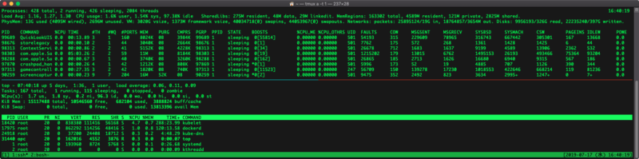

MacOS と Linux で top コマンドが大分違うので整理する
top コマンドで CPU 使用率やメモリ使用率を見たいなーと思ったのだが、MacOS と Linux (CentOS) とでオプションがかなり違うので、よく使うモノを整理することにした。
目次
環境確認
本記事の top コマンドの内容は以下のとおり。
- MacOS
- MacOS Mojave 同梱の
topコマンド
- MacOS Mojave 同梱の
- Linux : CentOS 7
$ top -vの結果はprocps-ng version 3.3.10だった
普通に top コマンドを打った画面
普通に top コマンドを打った画面から、見えるモノが全然違う。以下のスクリーンショットは、上半分が MacOS、下半分が Linux だ。

オプションを何も指定していない場合のソート順は、
- MacOS : PID の降順 (大きな値から順)
- Linux : CPU 使用率の降順 (高い順)
となっている。
CPU 使用率順にソートする
MacOS の場合は、
$ top -o cpu
と起動する。
もしくは、$ top で起動後、o と入力し、primary key [-pid]: といった表示が出たら、cpu と入力して Return キーを押下すれば良い。
Linux の場合は top コマンドのみで起動すれば CPU 使用率順になるが、
$ top -o %CPU
とカラム名を指定してソートしても良い。
もしくは、$ top コマンドで起動後、Shift + p を押下しても CPU 使用率順でソートできる。
メモリ使用率順にソートする
MacOS の場合は
$ top -o mem
もしくは、起動後に o → mem でソート可能。
Linux の場合は
$ top -o %MEM
もしくは Shift + m でソート可能。
プロセス ID を指定して確認する
MacOS の場合は、
$ top -pid 【PID】
で表示可能。
Linux の場合は
$ top -p 【PID】
で表示可能。
まとめ
チートシートにまとめるとこんな感じ。
| したいこと | MacOS | Linux |
|---|---|---|
| デフォルトのソート順 | PID 降順 | CPU 使用率降順 |
| CPU 使用率でソート起動 | top -o cpu |
top -o %CPU |
| 起動後 CPU 使用率ソート | o → cpu |
Shift + p |
| メモリ使用率でソート起動 | top -o mem |
top -o %MEM |
| 起動後メモリ使用率ソート | o → mem |
Shift + m |
| PID を指定して起動 | top -pid 【PID】 |
top -p 【PID】 |
それぞれ微妙にお作法が違ってて面倒臭い…。